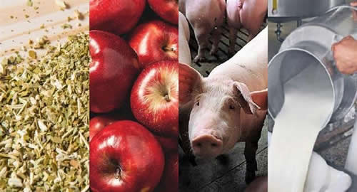

Real Chubut - Agencia de Noticias


Una tormenta real pone a las economías regionales en crisis

Desde la asunción de Mauricio Macri pasaron 31 meses. Uno de los sectores que más expectativas había puesto en la gestión de Cambiemos, era el agroindustrial, y en particular los pequeños y medianos productores de las economías regionales. Sin embargo, luego de poco más de dos años y medio, la crisis que atraviesan las economías regionales, con niveles incluso por debajo de lo que exhibían en diciembre de 2015, cambió aquella esperanza por decepción. El diagnóstico debe contemplar dos ejes: el déficit estructural y la coyuntura actual. Empezando por el último, indudablemente la sequía golpeó con fuerza sobre todo a los productores de granos, a lo que luego se sumaron las inundaciones en diversas regiones. Ahora bien, a la cuestión climática hay que agregar dos factores que son vitales para las economías regionales: el caída del consumo interno, a donde se destina el 80% de las producciones locales, y la megadevaluación (en promedio del 45% en lo que va del año) que impacta de lleno en los precios de los insumos y de los granos con los que se abastecen producciones como la lechería, la avícola y la porcina. Como corolario, el abrupto sinceramiento tarifario provocó un aumento de los costos internos, que terminó por rematar los escasos márgenes de rentabilidad con los que venían trabajando algunos sectores. Al respeto, Príncipe aportó un ejemplo que evidencia la crisis del sector: "En Oncativo tenemos un cluster que es un orgullo porque tiene la mejor genética y gran calidad. En ese cluster había 75 productores de 20 a 500 madres, pero 15 productores ya desaparecieron y 30 productores vendieron más del 30% de sus madres y los otros 30 frenaron cualquier tipo de inversión". Para los porcinos, la sobre oferta se conjuga con la suba del precio del maíz. El sector avícola, por su parte, sufre una caída de la producción, ante una baja del consumo y de la exportación. Fuente: Ambito
A lo largo del país, pequeños y medianos productores de granos, carne bovina, leche, algodón, arroz, aves, cítricos, forestal, hortalizas, mandioca, maní, ovinos, papa, peras y manzanas, porcinos, tabaco, vino y mosto, y yerba mate, sufren los embates de una crisis económica, a la que el Gobierno prefiere mencionar con el eufemismo de tormenta.
El Semáforo de las Economías Regionales que realiza mensualmente CONINAGRO (Confederación Intercooperativa Agropecuaria Limitada), mostró en julio 10 sectores productivos con signos de crisis, sobre un total de 19 actividades relevadas. "Hay una situación muy complicada en la mayoría de las economías provinciales", advirtió el presidente de CONINAGRO, Carlos Iannizzotto en diálogo con ámbito.com. En el mismo sentido, Omar Príncipe, titular de la Federación Agraria Argentina (FAA) afirmó que "hay muchos sectores que están en una situación muy complicada, sobre todo de pequeños y medianos productores".
En lo que hace a las cuestiones de larga data, es innegable que si se toman los últimos 35 años, ninguno de los gobiernos que pasó por la Casa Rosada logró mejoras sustanciales en materia de infraestructura rural, tanto vía como energética, un pasivo que eleva los costos de los productores y en muchos casos hace inviable el negocio. "Hay problemas estructurales en la Argentina que no son de los últimos dos años, son problemas que viene arrastrando el país pero que se han profundizado en los últimos dos años y eso nos preocupa", sentenció Príncipe.
A este panorama, se agrega un factor que puede ser determinante para el futuro inmediato. Los pequeños y medianos productores afectados por la seca, en muchos casos quedaron fuertemente endeudados, y al perder la cosecha no han podido monetizar la producción y por ende no tienen fondos para reinvertir para la próxima campaña. Para colmo de males las tasas de financiación en más del 40%, hacen prohibitiva la financiación. "Si sumás deuda, pérdida de cosecha, aumento de tarifas, insumos que están dolarizados, sustitución en muchos casos de productos por importados, realmente es un combo que hace todo muy difícil", alertó el titular de la FAA.
• Números
Uno de los sectores más complicados es el lácteo que tiene una abultada deuda de arrastre, con costos de producción que se colocan por encima del precio de la leche. Según datos recopilados por la Universidad de Avellaneda (UNDAV), la producción primaria de leche (en millones de litros) creció en el lapso que va desde enero a mayo de 2018 interanual, desde 3718,2 a 4.007,7 (+7,8%). Aun así, no logra recuperar su nivel de nivel de 2015 (-9,1% con respecto a 2015). Similar proceso se observa para la elaboración de leche (industria de por medio) que creció 1,1% en 2018 interanual, pero muy por debajo del nivel de 2015 (-15,7%). Por otra parte, las ventas internas de leche fluida cayeron 1,2% (enero-abril de 2018 interanual) y con respecto a 2015 la baja es peor (-8,9%). Por otro lado, las exportaciones lácteas crecieron 19,6% (pasaron desde 213 a 255 millones de dólares) entre enero y abril de este año, en la comparación interanual. Esta situación llevó al cierre de 450 tambos en el lapso de un año, según la FAA.
Otra de las producciones que en 2017 tuvo un buen año pero que ahora revirtió esa tendencia es el sector porcino. "Los números se han deteriorado sensiblemente en lo que va de 2018, sin piso hasta junio. Sucede que los costos se han movido mucho más rápido que los ingresos. Por caso, los primeros subieron más del 60% en el período junio 2017-junio 2018, mientras que los segundos sólo el 21%", advirtió un informe de la Fundación Mediterránea. En junio de 2018 la granja de 250 madres y eficiencia baja que se usa de referencia muestra un margen neto (ingresos descontados todos los costos) de -$6,8 por kilo producido si se considera la localización sur de Córdoba (Malena) y de -$8,3 si el emplazamiento es Rosario.
En los sectores con signos de crisis en el Semáforo de CONINAGRO figuran la producción de yerba mate, en el noreste del país con mercados estancados en momentos de cosecha, y el vino y el mosto, en la región de Cuyo, también con una nueva cosecha, pero con bajos precios a nivel internacional. La suba de costos internos también afecta a la producción papa, con insumos dolarizados, pero precios de venta en pesos. En el caso de los ovinos, en Corrientes, a las escasas alternativas comerciales, se le ha sumado una producción estancada.
En lo que hace a la vitivinicultura, las ventas de vinos al mercado interno cayeron 3% interanual en el período enero- mayo de 2018. Se pasó de vender 3,36 millones de hectolitros a 3,26 millones. Con respecto a las exportaciones, cayeron las ventas de vino fraccionado (-3,5%) y subieron las de vino a granel (+21,5%), lo que por supuesto indica menos valor agregado en las ventas externas.
La situación es crítica también se siente en la producción de peras y manzanas. Según, CONINAGRO, en momentos de poda enfrenta altos costos, aunque en el caso de la manzana se registra el menor nivel de oferta en los últimos 10 años lo que puede ayudar a mantener el precio en el mediano plazo.
En las frutas en general, los mercados externos se mostraron complicados en 2017, cuando cayeron exportaciones de las principales frutas comercializadas en el exterior: pera (-11%), limón (-16%) y manzana (-14%).
• Dólar
La devaluación del peso indudablemente abre una expectativa de oportunidades para las producciones con destino externo. Claro que si se considera que el 80% de lo producido por las economías regionales está destinado al consumo doméstico, esa ventaja competitiva es selectiva. Pero además hay que tener en cuenta dos consideraciones. En primer lugar, la mayoría de los insumos agrícolas están dolarizados, y en segundo término, la suba de costos va corroyendo la rentabilidad, que en algunos casos ya era negativa con el objetivo de sostener una cuota de mercado.
"En las dos últimas devaluaciones (inicios 2014 y fin 2015), el efecto devaluatorio se diluyó rápidamente con la mayor inflación. En esas situaciones, favoreció a los exportadores, pero no hubo cambios sustanciales en las decisiones de aumentar sus ventas al exterior. Los cambios en el agro pampeano a partir de 2016 se debieron más por la reducción de retenciones. A la fecha el dólar actual es uno similar al de hace ocho años atrás, más competitivo. El impacto ha sido más fuerte que en las dos anteriores devaluaciones. Ahora sólo resta saber si la inflación diluirá rápidamente ese efecto", advirtió un informe de la Fundación Mediterránea.
"La competitividad por la devaluación es relativa y no lo digo por ver todo negativo. Pero mirá la importancia del rol del Estado en esto porque si no hay un Estado presente en toda la cadena el que se queda con la renta ese el que exporta, no llega al productor agropecuario", dijo Príncipe. En la misma línea, Iannizzotto hizo hincapié en la diferencia de precios entre lo que cobra el productor en la puerta del campo y el precio con el que llega a la góndola: "Al haber una recesión tan grande en el mercado interno los precios a los productores en la mayoría de las economías regionales nuevamente se están atrasando mucho. Hay precios que son los mismos del año pasado en algunos casos un poquito más", acotó.
Además, hay que considerar que el efecto positivo sobre la competitividad que tiene la devaluación no se traslada de forma inmediata sobre la producción, que por cuestiones naturales tiene un ciclo y un tiempo de maduración. Pero la situación de los productores es acuciante y requiere medidas urgentes que actúen como puente hasta lograr revertir los números rojos.
"Hay un combo de situaciones complejas que dificultan la producción. Las economías regionales son diferentes y complejas, es necesario trabajar en cada una de ellas de una manera diferenciada en lo que hace al financiamiento y la faz impositiva para poder darle una salida actividades productivas industriales y comerciales muy interesantes para la Argentina", sentenció Iannizzotto.